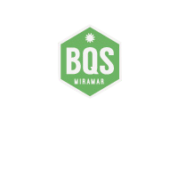
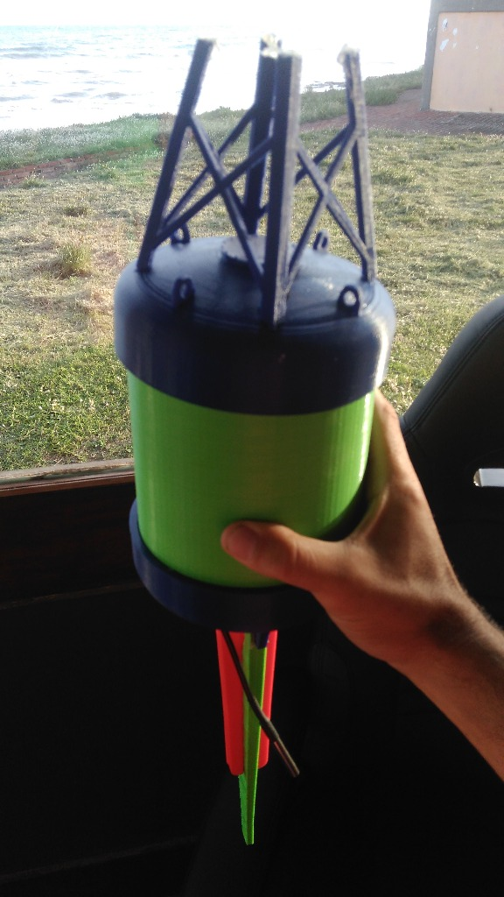

Acceso al Sistema de Telemetría & Gestión de Boyas
admin / admin

| Boya | Secuencia | Agua (°C) | Aire (°C) | Humedad | Batería | Saltos (Hops) | RSSI (dBm) | Gateway Receptor | Hora |
|---|
| ID | Hardware ID | Nombre / Sector | Tipo | Estado | Acciones |
|---|
avrdude -v -p atmega328p -c arduino -P /dev/ttyUSB0 -b 115200 -D -U flash:w:buoy_node_17.hex:i
El sistema BQS supera las limitaciones de alcance de línea de vista directa en mar abierto mediante una red en malla dinámica basada en RadioHead RHMesh (1.8x) sobre 915 MHz:
(source_node, sequence) para evitar tormentas de retransmisión.Optimizado para minimizar el tiempo al aire (Time on Air) y maximizar la autonomía energética:
| Campo | Bytes | Escala / Formato |
|---|---|---|
| Magic Header | 2 | 0xB05A |
| Versión & Tipo | 2 | v1.0 (Telemetría / Alerta) |
| Node ID / Dest ID | 2 | Identificador único 1-254 |
| Secuencia & Timestamp | 8 | uint32 (Unix Epoch) |
| Latitud / Longitud | 8 | int32 (grados × 10⁷) |
| Temp Agua / Aire / Hum | 6 | int16 (magnitud × 10¹) |
| Batería mV / Saltos / TTL | 4 | Nivel mV + Nibbles empaquetados |
| CRC-CCITT | 2 | Polinomio 0x1021 |
spool.db (para no perder datos ante caídas de enlace celular 3G) y cliente uploader HTTP.UNIQUE(node_id, sequence) para procesar tramas recibidas por múltiples gateways sin duplicar registros.
[ BOYA 17 - Mar Abierto ] (DS18B20 + DHT22 + GPS)
│ LoRa 915 MHz (Salto 1)
▼
[ BOYA 12 - Punta Hermengo ] (Relay / Multi-Hop)
│ LoRa 915 MHz (Salto 2)
▼
[ BOYA 04 - Escollera Norte ] (Relay Cercano)
│ LoRa 915 MHz (Salto 3)
▼
┌────────────────────────────┐
│ GATEWAY 01 - Miramar │ (Raspberry Pi 3 + Spool SQLite)
└─────────────┬──────────────┘
│ Internet / Red Celular (POST /api/v1/telemetry)
▼
┌────────────────────────────┐
│ BQS SERVER & DASHBOARD │ (Leaflet Map + Base de Datos + ABM)
└────────────────────────────┘